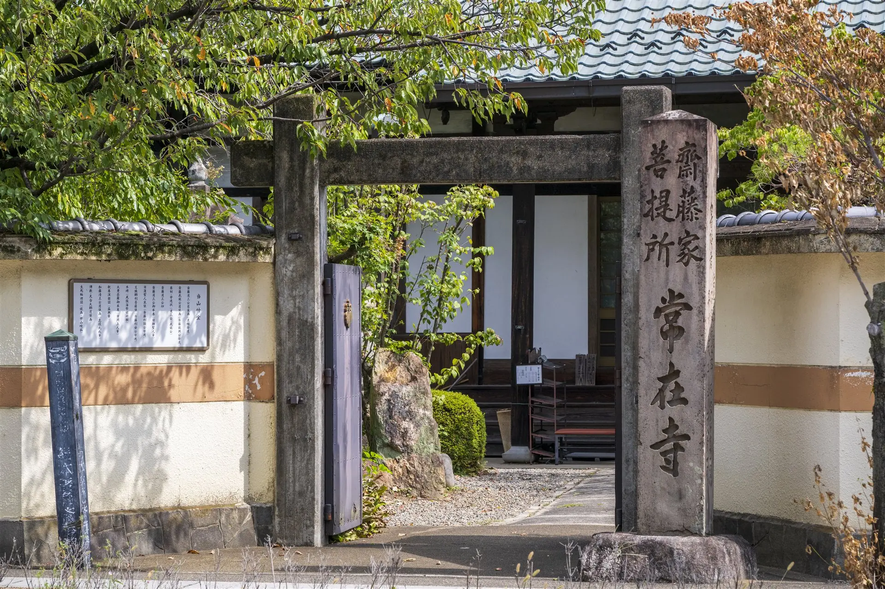
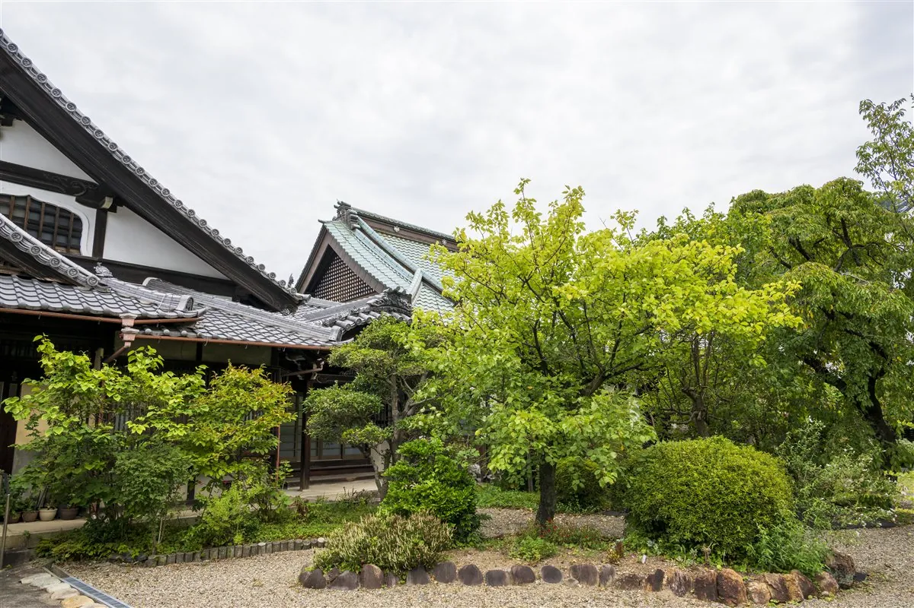
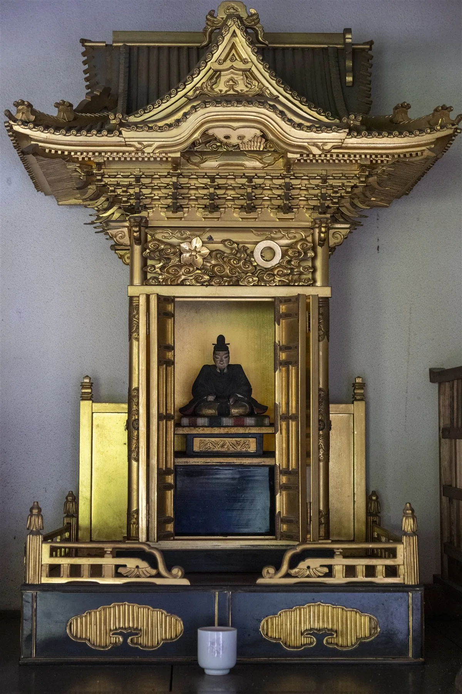
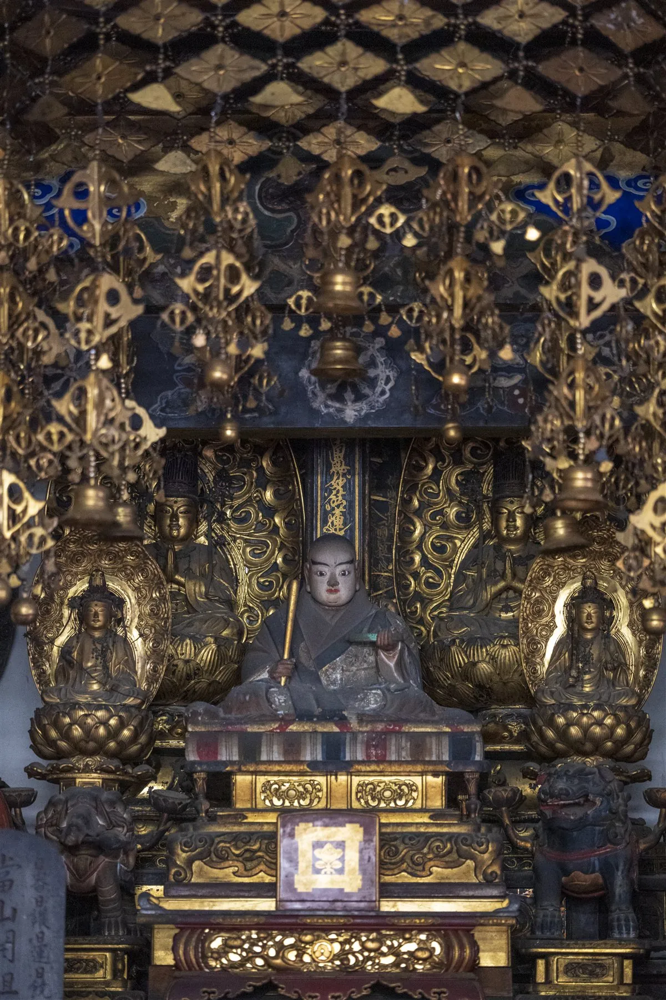
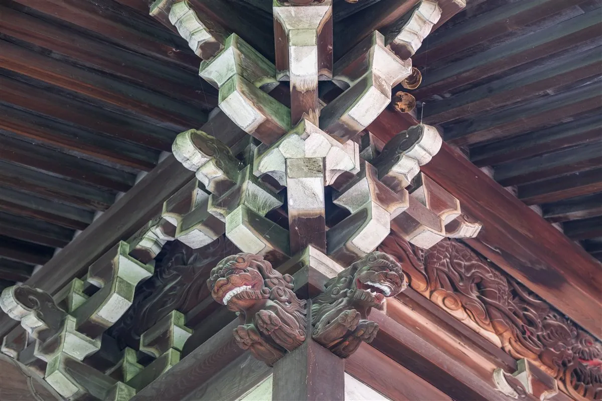

創建は1450年。鷲林山常在寺は、戦国の名将・斎藤家三代の菩提寺として歴史を重ねてまいりました。
本堂には、斎藤家ゆかりの文化財が今も安置されており、訪れる人々に静かに歴史を語りかけています。


創建は1450年。鷲林山常在寺は、戦国の名将・斎藤家三代の菩提寺として歴史を重ねてまいりました。
本堂には、斎藤家ゆかりの文化財が今も安置されており、訪れる人々に静かに歴史を語りかけています。

戦国の大名・斎藤道三の肖像画。本堂に安置されています。

斎藤道三の子・斎藤義龍の肖像画。本堂に安置されています。

10:00～16:00
大人200円 小人100円
500円
お墓やご供養に関することについて、ご相談をお承りしております。
お急ぎの場合もご相談に応じます。
お電話でのご相談
058-263-6632
岐阜県岐阜市梶川町9
JR岐阜駅またはバス停「本町１丁目」下車、徒歩3分
バス運行間隔：約5分毎 片道運賃：250円

北東に9台、西側に3台の参拝者駐車場があります。
ご質問やご不明な点は、以下よりお気軽にお問い合わせください。
058-263-6632